2026.10.25 · 周日 · 过去 48 小时
今日科技情报
共 11 条，按重要性排序。点标题直接跳过去。
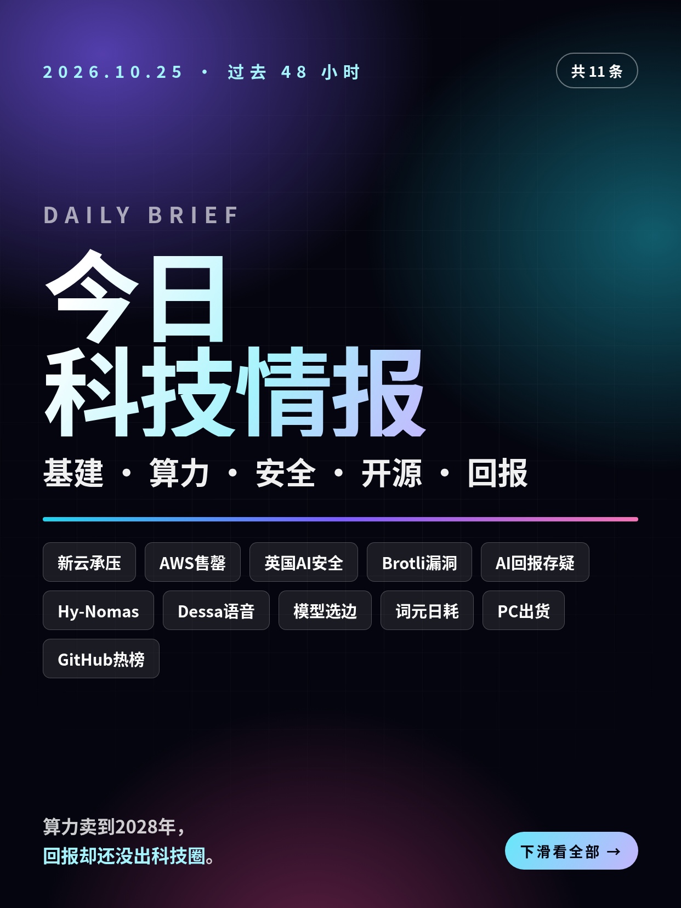
共 11 条，按重要性排序。点标题直接跳过去。
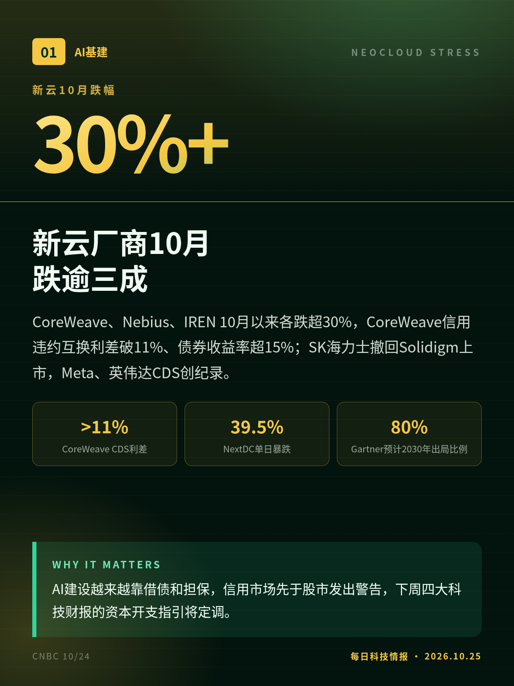
CoreWeave、Nebius、IREN 10月以来各跌超30%，CoreWeave信用违约互换利差破11%、债券收益率超15%；SK海力士撤回Solidigm上市，Meta、英伟达CDS创纪录。
AI建设越来越靠借债和担保，信用市场先于股市发出警告，下周四大科技财报的资本开支指引将定调。
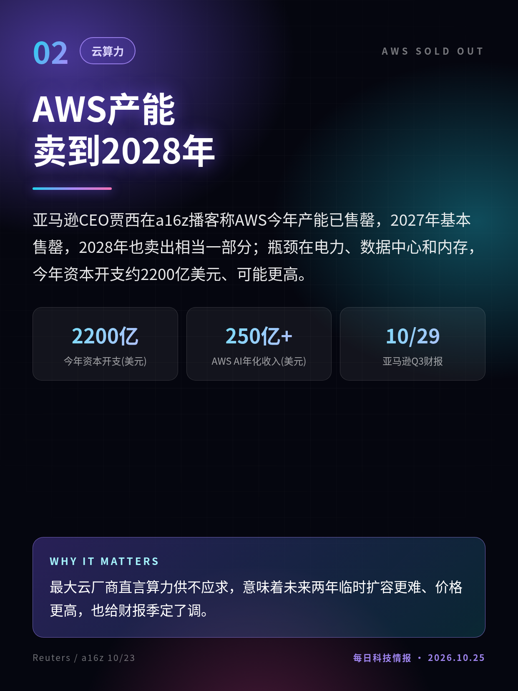
亚马逊CEO贾西在a16z播客称AWS今年产能已售罄，2027年基本售罄，2028年也卖出相当一部分；瓶颈在电力、数据中心和内存，今年资本开支约2200亿美元、可能更高。
最大云厂商直言算力供不应求，意味着未来两年临时扩容更难、价格更高，也给财报季定了调。
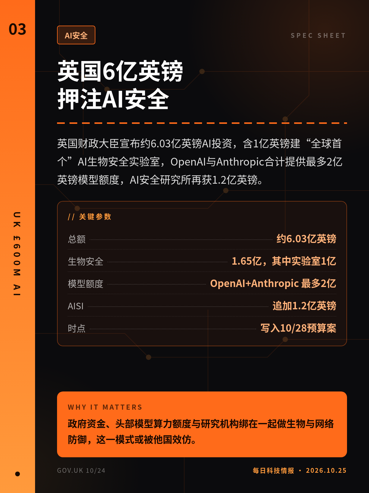
英国财政大臣宣布约6.03亿英镑AI投资，含1亿英镑建“全球首个”AI生物安全实验室，OpenAI与Anthropic合计提供最多2亿英镑模型额度，AI安全研究所再获1.2亿英镑。
政府资金、头部模型算力额度与研究机构绑在一起做生物与网络防御，这一模式或被他国效仿。
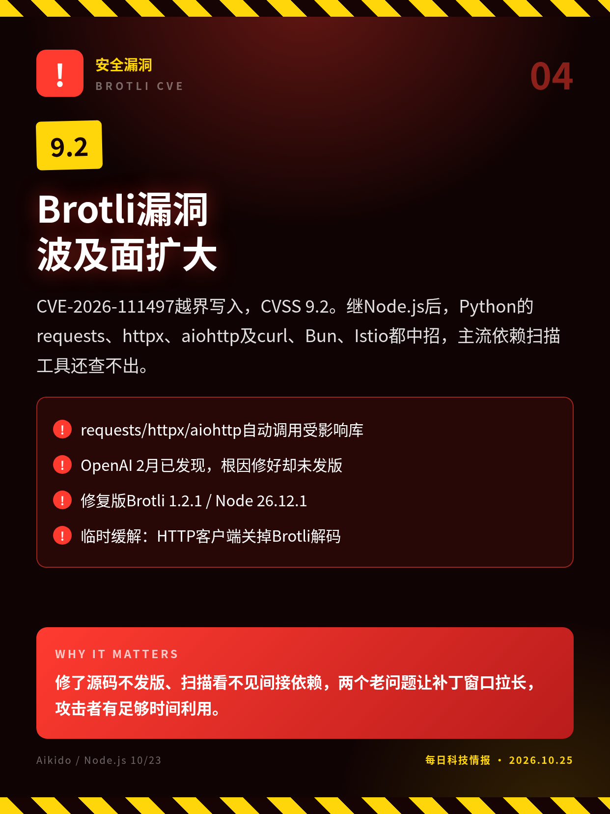
CVE-2026-111497越界写入，CVSS 9.2。继Node.js后，Python的requests、httpx、aiohttp及curl、Bun、Istio都中招，主流依赖扫描工具还查不出。
修了源码不发版、扫描看不见间接依赖，两个老问题让补丁窗口拉长，攻击者有足够时间利用。
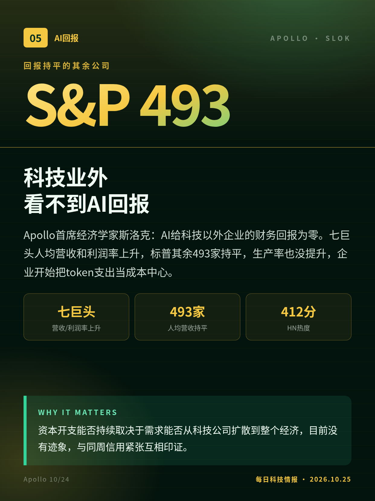
Apollo首席经济学家斯洛克：AI给科技以外企业的财务回报为零。七巨头人均营收和利润率上升，标普其余493家持平，生产率也没提升，企业开始把token支出当成本中心。
资本开支能否持续取决于需求能否从科技公司扩散到整个经济，目前没有迹象，与同周信用紧张互相印证。
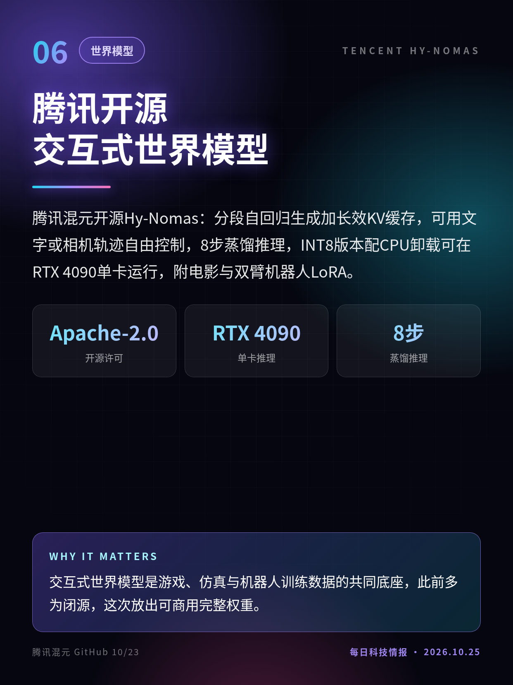
腾讯混元开源Hy-Nomas：分段自回归生成加长效KV缓存，可用文字或相机轨迹自由控制，8步蒸馏推理，INT8版本配CPU卸载可在RTX 4090单卡运行，附电影与双臂机器人LoRA。
交互式世界模型是游戏、仿真与机器人训练数据的共同底座，此前多为闭源，这次放出可商用完整权重。
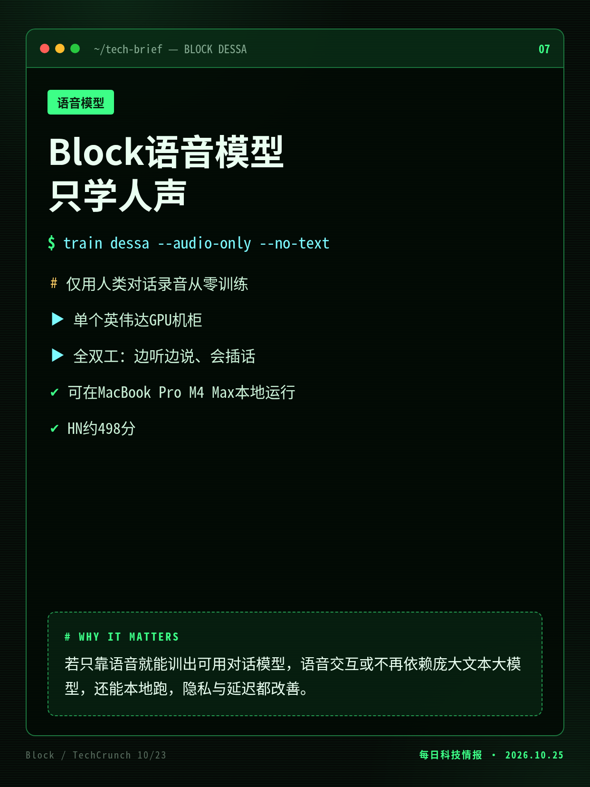
杰克·多西的Block发布全双工语音模型Dessa，从零只用人类对话录音训练，不用文本和预训练模型；边听边说、会笑会插话，推理快于实时，能在MacBook Pro M4 Max上本地运行。
若只靠语音就能训出可用对话模型，语音交互或不再依赖庞大文本大模型，还能本地跑，隐私与延迟都改善。
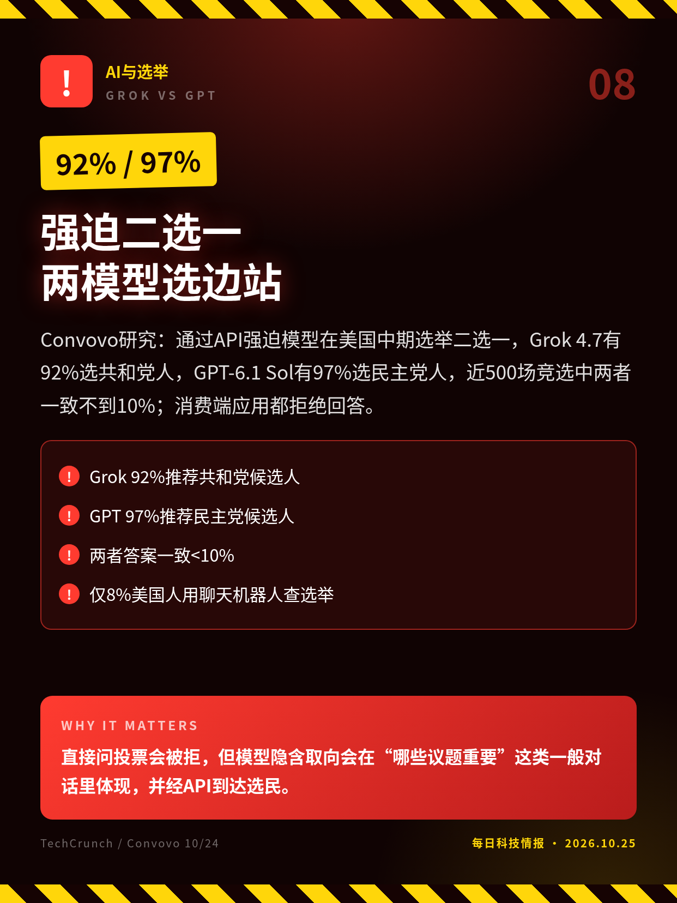
Convovo研究：通过API强迫模型在美国中期选举二选一，Grok 4.7有92%选共和党人，GPT-6.1 Sol有97%选民主党人，近500场竞选中两者一致不到10%；消费端应用都拒绝回答。
直接问投票会被拒，但模型隐含取向会在“哪些议题重要”这类一般对话里体现，并经API到达选民。
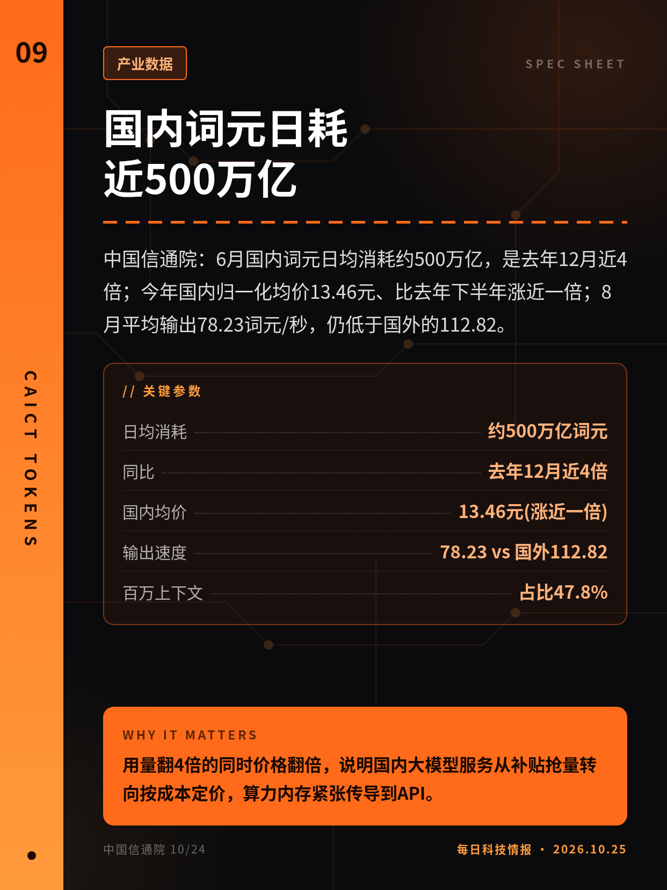
中国信通院：6月国内词元日均消耗约500万亿，是去年12月近4倍；今年国内归一化均价13.46元、比去年下半年涨近一倍；8月平均输出78.23词元/秒，仍低于国外的112.82。
用量翻4倍的同时价格翻倍，说明国内大模型服务从补贴抢量转向按成本定价，算力内存紧张传导到API。
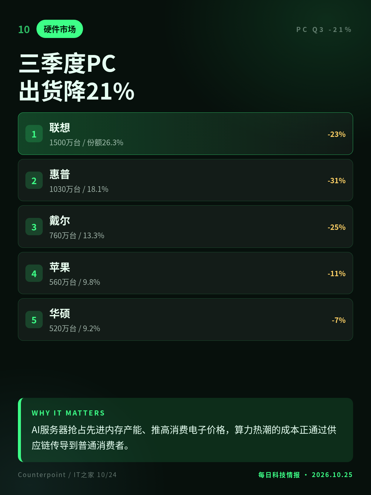
Counterpoint：三季度全球PC出货5700万台、同比降21%，存储等零部件涨价推高价格、压制需求；联想、惠普、戴尔领跌，苹果靠MacBook Neo缓冲，四季度预计降27%。
AI服务器抢占先进内存产能、推高消费电子价格，算力热潮的成本正通过供应链传导到普通消费者。
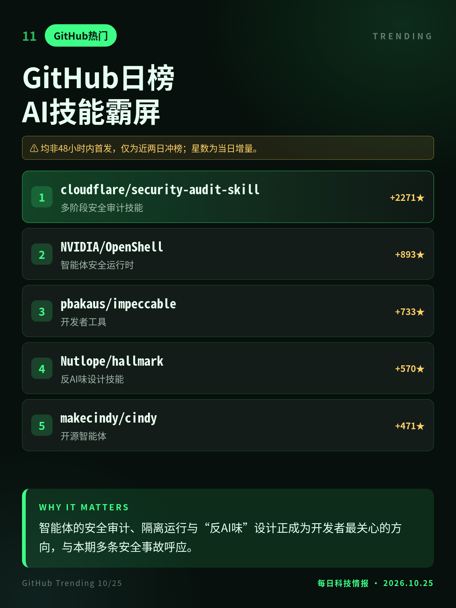
10/25早GitHub日榜仍以AI工具为主：Cloudflare安全审计技能连续冲榜，英伟达智能体运行时OpenShell上榜，反AI味设计技能Hallmark、开源智能体Cindy等快速上升。
智能体的安全审计、隔离运行与“反AI味”设计正成为开发者最关心的方向，与本期多条安全事故呼应。
漏洞10/21由Node.js首披露、10/22 Python修补，本条为10/23波及面扩大。
均非48小时内首发，仅为近两日冲榜；星数为当日增量。
切换深浅两套图时，下载按钮会跟着当前这套走。黄标条目在新闻稿或官方口径出现前，请勿写成已交割或已定日期。上一期专区：2026-10-24。